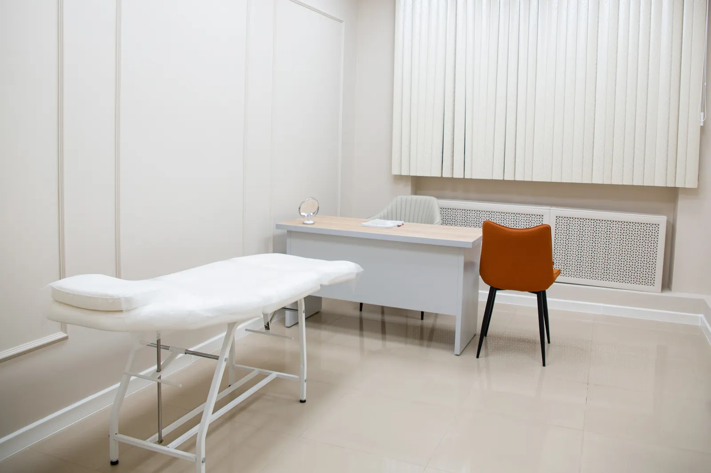
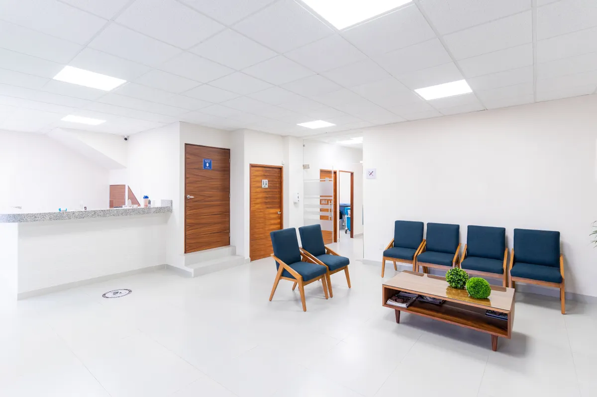
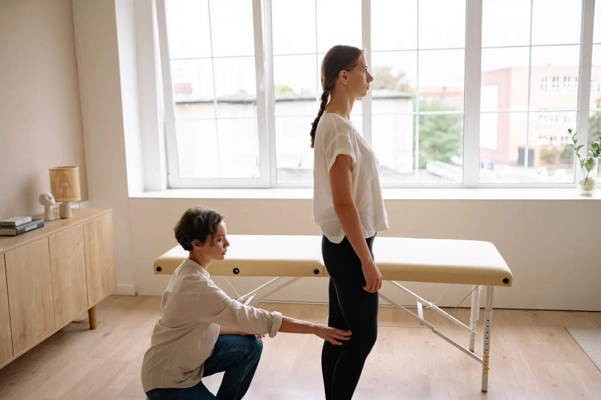
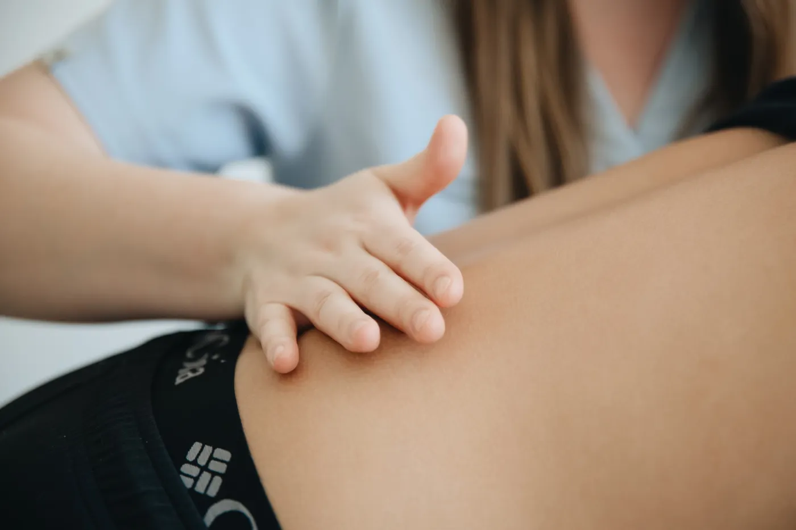
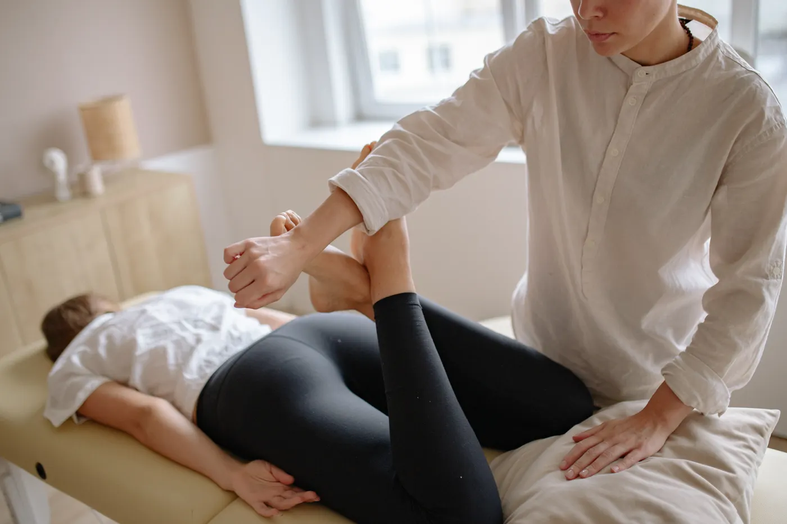

A QUIET BODYWORK STUDIO IN MIDORICHO
今日のからだを、今日のままに。
強く押さず、毎回の状態を確かめてから。
自分のペースで通える、緑町の小さな整体院です。
静かな住宅街の一室サンプル駅 南口から徒歩6分
ごあいさつ
急がず、決めつけず、その日の声を聞く。
肩や腰の重さが気になる日も、理由は人それぞれ。整体院そよぎでは、最初にお話を伺い、その日のからだの様子を一緒に確かめてから施術を組み立てます。
強く押すことを前提にせず、来院の頻度も押しつけません。仕事や家事の合間に、安心して相談できる場所でありたいと考えています。
初めての方へ
気になるところを選んでください
からだの図から、
相談する場所を。
場所を押すと、よく伺うお悩みと施術の内容をご覧いただけます。
一つに決めず、気になるところをいくつ選んでも大丈夫です。
01 SELECTED AREA
首まわり
こんな方に
長時間のデスクワークやスマートフォンのあと、首まわりがこわばるように感じる方。
施術の内容
座り方や動かしやすさを確認し、首と肩の境目に負担の少ない手の圧を添えていきます。
感じ方やご希望を伺いながら、力加減を調整します。

A GENTLE, PERSONAL PACE
その日の状態を、一緒に確かめながら。
- 01強く押さないお好みや緊張の様子を聞き、負担にならない触れ方を探します。
- 02毎回、状態を確認前回と同じ内容に決めず、その日の気になることから始めます。
- 03頻度を押しつけない次の予約は、ご自身の都合や希望に合わせてお考えください。
はじめてのご来院
ご予約から、
お帰りまで。
施術の前後に慌てないよう、流れを事前にご案内します。
- 01
ご予約
LINEまたはお電話で、ご都合のよい日時をお知らせください。
- 02
問診
気になることや過ごし方を伺い、今日の希望を確認します。
- 03
施術
力加減を確かめながら、ゆっくりと進めていきます。
- 04
ご自宅でのアドバイス
必要に応じて、普段の生活で取り入れやすい工夫をお伝えします。
料金のご案内
時間と内容で選べる
3つのプラン。
初回はカウンセリングの時間を含みます。
表示価格はすべて税込です。
| プラン | 時間 | 料金 | 内容 |
|---|---|---|---|
| FIRST VISIT初回 | 約70分 | ¥6,600 | カウンセリング込み |
| STANDARDスタンダード | 約50分 | ¥5,500 | 状態確認・施術・お話 |
| SLOW TIMEじっくり | 約80分 | ¥7,700 | ゆっくり相談したい方へ |
※時間は目安です。お話の内容や当日の状況により前後します。物販や回数券の販売はありません（見本）。
よくあるご質問
気になることを、先におたずねください。
ほかにも気になる点があれば、ご予約時にお知らせください。
どんな服装で行けばよいですか？
動きやすい服装がおすすめです。着替えが必要な場合は、院内の簡単な着替えをご利用いただけます（見本）。
強い刺激や痛みが苦手です。
強く押すことを前提にしていません。施術中も力加減を確認しますので、気になったらすぐお伝えください。
どれくらいの頻度で通うものですか？
決まった回数や頻度の指定はありません。次回については、ご自身の希望や暮らしの予定に合わせてご検討ください。
予約の変更やキャンセルはできますか？
変更をご希望の際は、分かった時点でLINEまたはお電話からご連絡ください。見本の連絡先です。
支払い方法を教えてください。
現金・クレジットカード・QR決済に対応しています（見本）。
子どもを連れて行けますか？
お子さま連れでの来院もご相談いただけます。安全のため、予約時に年齢と人数をお知らせください。
FIND US IN MIDORICHO
緑町の、
静かな一室で。
- 住所
- サンプル市緑町7-8-9
- アクセス
- サンプル駅 南口から徒歩6分
- 営業時間
- 10:00〜20:00（最終受付 19:00）
- お休み
- 木曜日・日曜日
- 駐車場
- 2台（無料・見本）
- お支払い
- 現金・カード・QR決済

住宅街の中にある小さな整体院TAKE A MOMENT FOR YOURSELF
相談からでも、
お気軽にどうぞ。
ご希望の日時や気になることをお聞かせください。
